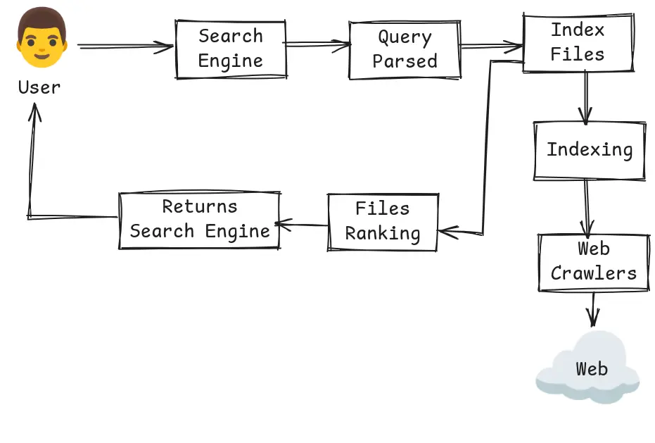
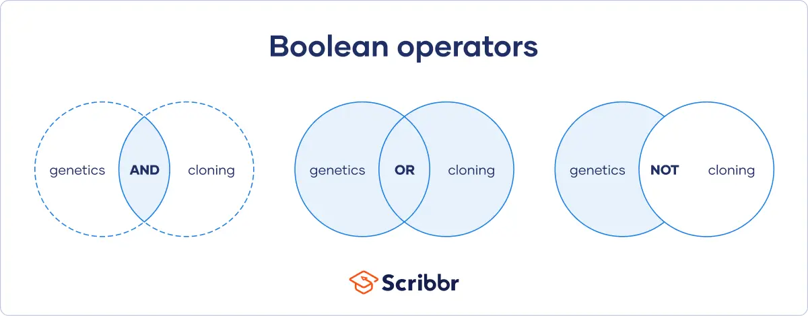
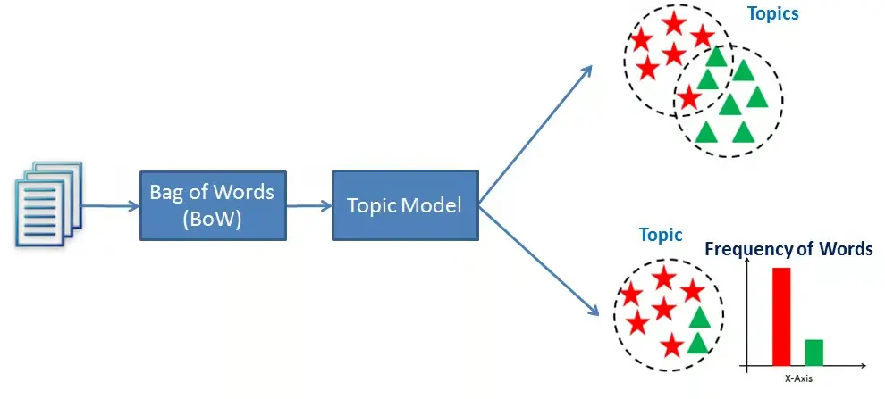

IRS
Objective of IRS
The primary objective of an Information Retrieval System (IRS) is to efficiently locate and retrieve relevant information from a vast collection of documents.
This is achieved by:
- Crawling
- Indexing
- Ranking
Key Objectives:
- Relevance
- Efficiency
- Precision
- Recall
Data modeling
Data modeling is the process of creating a visual representation of a system’s data and how it is organized.
- Entity Relationship Model

- Components:
- Entities: Objects or things (e.g., Customer, Product).
- Attributes: Properties or details of entities (e.g., Customer Name, Product Price).
- Relationships: Associations between entities (e.g., a Customer "buys" a Product).
Relational Model
classDiagram direction RL Table3 <|-- Table2 Table3 <|-- Table1 Table3 <|-- Table4 class Table2{ } class Table1{ } class Table4{ }- Components:
- Tables: Collections of related data entries (e.g., a "Customers" table).
- Primary Key: A unique identifier for each record in a table (e.g., Customer ID).
- Foreign Key: A field in one table that links to the primary key of another table, establishing relationships (e.g., an Order table referencing the Customer ID).
- Components:
What is the purpose of a search engine?

User relevance feedback
User relevance feedback is a process in information retrieval (IR) systems where users provide input on the relevance of search results.
Contributions to Improved Results
- Personalization
- Enhanced Ranking
- Refinement of Queries
Relevance Feedback Process
flowchart TB iq[Initial Query] --> ir[Initial Result] --> fq[Feedback Phase] --> qr[Query refiresment] --> rr[Revised Results]
Types of Relevance Feedback
- Explicit Relevance Feedback:
- Positive Feedback: The system then uses this information to modify the query, often by adding terms from these documents or increasing the weight of terms already in the query that appear in these documents.
- Negative Feedback: The system can then adjust by lowering the weight of terms from these documents or removing them from the query vector.
- Implicit Relevance Feedback:
- Click-through Behavior: Observing which results users click on can imply relevance. Systems can infer that clicked documents are relevant, although this can be noisy due to users clicking out of curiosity or by mistake.
- Dwell Time: The amount of time spent on a document might indicate its relevance. Longer dwell times could suggest that the document was useful to the user.
- Scrolling and Navigation Patterns: How far a user scrolls or navigates through results can provide feedback on the relevance of the results presented.
Phase of Text Pre-Processing within a Document
- Tokenization: Breaks down text into individual words or tokens. It's essential for understanding the structure of text and for most NLP tasks.
- Stemming: Reduces words to their root form by removing suffixes (e.g., "running" to "run"). It's a less precise but faster method than lemmatization.
- Lemmatization: Converts words to their base or dictionary form (e.g., "better" to "good").
- Stop-word removal: Removes common words (like "the", "is", "at") that usually do not contribute to the meaning in many contexts, reducing noise in data.
- Lowercasing: Converts all text to lowercase to ensure case-insensitive analysis. This step helps in normalizing text where "Text" and "text" would otherwise be treated as different.
- Normalization: Adjusts text to a common format, which might include:
- Converting numbers to words or vice versa.
- Handling contractions (e.g., "don't" to "do not").
- Standardizing date formats or other special formats.
Keyword based Query
Keyword-based queries are designed to retrieve information from databases or search engines by allowing users to input specific terms or phrases.
Types
- Boolean Queries:
- Description: Utilizes logical operators (AND, OR, NOT) to combine keywords.
- Example: A query like "apple AND orange" retrieves results containing both terms, while "apple OR orange" retrieves results containing either term.
- Phrase Queries:
- Description: Searches for exact phrases rather than individual keywords, typically enclosed in quotation marks.
- Example: A query like
"climate change"will return documents containing that exact phrase, improving relevance by filtering out unrelated results.
- Wildcard Queries:
- Description: Uses special characters (like
*or?) to represent one or more unknown characters, allowing for broader searches. - Example: A query like "bio*" would return results for "biography," "biomedical," "biotechnology," etc., enabling users to capture variations of a root word.
- Description: Uses special characters (like
- Single-Word Queries:
- A query is formulated by a word.
- A document is formulated by long sequences of words.
- Word queries return a list of documents that contains at least of the query word.
- Proximity Queries
- Proximity refers to search that accounts for how close within a record multiple items should be to each other.
- Most commonly used proximity search option is a phase search that requires terms to be in exact order.
Inverted index/file
An inverted file, also known as an inverted index, is a data structure used in information retrieval systems to facilitate efficient full-text searches.
Example
Consider a simple example with three documents:
- Document 1: "The quick brown fox."
- Document 2: "The lazy dog."
- Document 3: "The quick blue hare."
Step 1: Tokenization
First, we tokenize the documents into individual words (terms):
- Doc 1: The, quick, brown, fox
- Doc 2: The, lazy, dog
- Doc 3: The, quick, blue, hare
Step 2: Building the Vocabulary
Next, we create a vocabulary from the unique terms across all documents:
- Vocabulary: {the, quick, brown, fox, lazy, dog, blue, hare}
Step 3: Creating the Inverted List
Now we build the inverted list for each term:
| Term | Document IDs |
|---|---|
| the | [1, 2, 3] |
| quick | [1, 3] |
| brown | |
| fox | |
| lazy | |
| dog | |
| blue | |
| hare |
In this table:
- The term "the" appears in Documents 1, 2, and 3.
- The term "quick" appears in Documents 1 and 3.
- The term "brown" appears only in Document 1.
What is Query Specification?
Query specification is the process of defining the criteria used to search for information in a database or information retrieval system. It involves translating a user's information need into a precise query that the system can understand and process.
Boolean Query formulation
Boolean query formulation is a method used in information retrieval systems to search for documents based on logical expressions.

Basic Concepts:
- Keywords: The basic units of a Boolean query are the search terms or keywords you're looking for.
- Operators:
- AND: Returns only documents that contain all the specified terms.
- OR: Returns documents that contain at least one of the specified terms.
- NOT: Excludes documents that contain the specified term following NOT.
Common approaches for Boolean Query Formulation:
- Direct Manipulation:
- Users interact directly with the system's interface to construct queries.
- This involves using graphical elements like buttons, sliders, and menus to specify search criteria.
- Example: A user can select keywords from a list and then use a point-and-click interface to combine them with Boolean operators.
- Natural Language:
- Users express their information needs in natural language, similar to how they would speak to another person.
- The system interprets the natural language query and translates it into a formal query language.
- Example: A user types "Show me articles about climate change," and the system interprets this as a search that includes the keywords "climate" and "change," likely using an AND operator.
OODBMS Vs ORDBMS
| Feature | OODBMS | ORDBMS |
|---|---|---|
| Data Model | Object-oriented | Relational with object-oriented extensions |
| Complexity | More complex | Less complex |
| Performance | Can be slower for simple queries | Generally faster for simple queries |
| Scalability | Can scale to large databases | Can scale to large databases |
| Standardization | Less standardized | More standardized |
Object-Oriented Database Management Systems
classDiagram
class Person {
+String name
+String email
}
class Employee {
+int employeeId
}
class Manager {
+String[] teamMembers
}
class Department {
+String departmentName
}
Person <|-- Employee : Inherits
Employee <|-- Manager : Inherits
Employee "1" -- "*" Department : WorksIn
OODBMS are designed to store and manage complex data, especially object-oriented data. They are based on object-oriented programming concepts like encapsulation, inheritance, and polymorphism.
Applications of OODBMS:
- CAD/CAM: Computer-Aided Design/Computer-Aided Manufacturing
- Geographic Information Systems (GIS): Storing and analyzing geographic data
- Multimedia Databases: Managing multimedia content, such as images, videos, and audio
- Telecommunications: Storing network configurations and call records
Components of OODBMS:
- Object Storage: Directly stores complex objects, including their methods and relationships, in the database.
- Inheritance: Supports class hierarchies where objects can inherit attributes and methods from parent classes.
- Encapsulation: Data and methods are bundled together, ensuring that the internal state of objects is protected.
- Polymorphism: Allows objects of different classes to be treated as objects of a common superclass.
- Query Language: Often uses an extended version of SQL or proprietary languages that understand object concepts, like OQL (Object Query Language).
Object-Relational Database Management Systems
classDiagram
class Person {
+String name
+String email
}
class Employee {
+int employeeId
}
class Manager {
+String[] teamMembers
}
class Project {
+String projectName
}
class Task {
+String taskName
}
Person <|-- Employee : Inherits
Employee <|-- Manager : Inherits
Employee "1" -- "*" Project : Manages
Project "1" -- "*" Task : Contains
An ORDBMS extends the relational database model to include object-oriented features, thereby bridging the gap between relational databases and object-oriented programming.
Applications of ORDBMS:
- E-commerce: Managing product catalogs, customer information, and order history
- Telecommunications: Storing customer information, network configurations, and call records
- Financial Services: Managing financial transactions, customer accounts, and risk analysis
- Geographic Information Systems (GIS): Storing and analyzing geographic data
Automatic feature extraction

Automatic feature extraction is a powerful technique in machine learning that automates the process of identifying and extracting relevant features from raw data.
Types of Local strategy
- Local Clustering: : This approach involves identifying clusters or groups within a local neighborhood of data points or features.
- Local context analysis: This method looks at the context surrounding a feature or data point to extract meaningful information, considering the relationships or dependencies between elements in a localized area.
How Does it Work?
- Data Input
- Feature Learning
- Feature Representation
- Model Training
Multimedia indexing
flowchart LR
Query --> fe[Feature Extraction]
md[Multimedia Database] --> fe
fe --> sm[Similarity Measure] -->
Ranking --> Result
Techniques for Multimedia Indexing
- Content-Based Indexing:
- Visual Features: Color histograms, texture features, shape descriptors.
- Audio Features: Mel-Frequency Cepstral Coefficients (MFCCs), spectral centroids, and chroma features.
- Textual Features: Textual content associated with multimedia data, such as captions, transcripts, or metadata.
- Semantic Indexing:
- Semantic Annotation: Assigning semantic tags to multimedia objects to improve search and retrieval.
- Knowledge-Based Indexing: Using knowledge bases and ontologies to understand the semantic meaning of multimedia content.
- Hybrid Indexing:
- Combining content-based and semantic indexing to achieve more accurate and efficient retrieval.
Applications
- Image Search
- Video
- Music
- Digital Libraries
- Multimedia Database
Taxonomy of IR Model
graph TD;
A[IR Models]
A --> B[Representation
Models]
B --> C[Boolean
Model]
B --> D[Vector Space
Model]
B --> E[Probabilistic
Model]
A --> F[Feedback
Mechanism]
F --> G[Static
Models]
F --> H[Dynamic
Models]
A --> I[Data
Type]
I --> J[Text-Based
Models]
I --> K[Multimedia
Models]
A --> L[Learning
Approach]
L --> M[Traditional
Models]
L --> N[Machine Learning
Models]
- Boolean Model:
- Uses Boolean logic (AND, OR, NOT) for query formulation.
- Documents are represented as sets of keywords.
- Vector Space Model:
- Represents documents and queries as vectors in a multi-dimensional space.
- Uses cosine similarity to measure relevance.
- Probabilistic Model:
- Models uncertainty in relevance based on probability theory.
- Assumes a probability distribution over documents for a given query.
- Text-Based Models
- Multimedia Models
Pattern matching
Different types of queries in information retrieval and database systems include:
- Keyword Queries: Simple text-based searches using keywords.
- Boolean Queries: Use logical operators (AND, OR, NOT) to combine keywords.
- Phrase Queries: Search for exact phrases by enclosing them in quotation marks.
- Range Queries: Specify a range of values, such as dates or numbers.
- Pattern Matching Queries: Search for data that matches a specific pattern, often using wildcards or regular expressions.

Sequential Searching

Interface support for the search process
- Search Bar
- Features: Autocomplete and spell-check.
- Advanced Search Options
- Faceted Search
- Features: Checkboxes for tags or publication dates.
- Search Results Display
- Features: Snippets, sorting options, and pagination.
- Ranking and Relevance Indicators
- User Feedback Mechanisms
- Search History and Saved Searches
- Related Searches and Recommendations
- Visual Search
- Mobile-Friendly Design
Starting Point
The starting point in information retrieval (IR) refers to the initial step in the process of retrieving relevant information from a collection of data. This process typically begins when a user formulates a query to find specific information within a digital library, database, or search engine.
List of Collections in Information Retrieval
- Textual Collections:
- Books
- Articles
- Web Pages
- Multimedia Collections:
- **Images
- Videos
- Audio
- Structured Data Collections:
- Databases
- Spreadsheets
- Hybrid Collections:
- Digital Libraries
- Institutional Repositories
Automatic Local Analysis
Automatic local analysis is a technique used in natural language processing (NLP) to analyze the meaning of words and phrases in the context of a specific sentence or document. It involves identifying the syntactic and semantic roles of words and their relationships with other words.
Example: Automatic Local Analysis in Sentiment Analysis
Context: A company wants to analyze customer feedback from reviews on its products. Given the volume of reviews, manual analysis would be time-consuming and impractical.
Process
- **Data Collection
- Text Preprocessing
- Sentiment Analysis:
- Local Focus: The analysis can be tailored to specific product categories (e.g., electronics vs. clothing) or local markets (e.g., reviews from a specific region).
- Algorithm Application: Using NLP techniques, the system applies a sentiment analysis model that classifies each review as positive, negative, or neutral based on word choice, phrases, and context.
- Insights Generation
- Decision Support
Visualization Tchniques
- Information Visualization
- Charts and Graphs
- Data Maps
- Infographics
- Interactive Visualization
- Zooming and Panning
- Filtering and Sorting
- Drill-Down and Roll-Up
Document clustering

Explain ranking and similarity measures with suitable example. (2023 Dec)
Ranking and Similarity Measures are fundamental concepts in information retrieval, machine learning, and data analysis, used to assess how items relate to each other or to a query. Here's an explanation with examples:
Ranking
Definition: Ranking is the process of ordering items based on some criteria or score. In the context of information retrieval, this often means ordering search results by relevance to a query.
Purpose:
- To present the most relevant items first.
- To help users quickly find what they're looking for among potentially vast amounts of data.
Example:
Consider a search engine where you type "machine learning books." The search engine would then rank results based on:
- Relevance: How closely each book matches the query (title, content, metadata).
- Popularity: Number of reviews, ratings, or sales.
- Recency: Recently published books might rank higher for certain queries.
Similarity Measures
Definition: Measures how similar two items are, often used to rank items by their similarity to a query or each other.
Example:
Recommendation Systems: Netflix might use similarity measures to find movies similar to ones you've enjoyed, ranking them by how closely they match your viewing history or preferences.
Flat Browsing Vs Hypertext Browsing

| Aspect | Flat Browsing | Hypertext Browsing |
|---|---|---|
| Structure | Linear, sequential | Non-linear, interconnected with hyperlinks |
| Navigation | Scrolling/paging | Clicking hyperlinks |
| User Experience | Simpler, for organized data | More engaging for complex, linked info |
| Access | Sequential search | Direct via links |
| Search | Limited | Enhanced with link analysis |
| Examples | Directory lists, simple docs | Wikipedia, modern websites |
| Complexity | Lower | Higher |
| Discovery | Deliberate | Serendipitous |
| Maintenance | Easier | More complex |
Flat Browsing
- Flat browsing refers to a linear and hierarchical approach to navigating information, typically found in structured formats like traditional file systems or simple web directories.
- Example: A traditional website with a main menu leading to subpages about different topics. Users click on a topic to view related content but must return to the menu to explore other topics.
Hypertext Browsing
- Hypertext browsing allows for a non-linear approach to information retrieval, enabling users to navigate between interconnected documents through hyperlinks.
- Example: The World Wide Web is the most common example of hypertext browsing, where clicking on hyperlinks within a webpage can lead users to entirely different pages or resources related to the topic.
Information Retrieval in Digital Libraries
Key Components of IR in Digital Libraries:
- Indexing:
- Text Indexing
- Metadata Indexing
- Full-text Indexing
- Query Processing:
- Parsing Queries
- Query Expansion
- Ranking Algorithms:
- PageRank: Ranking documents based on their importance and the number of links pointing to them.
- User Interface
Huffman Algorithm
The Huffman Algorithm is a popular method used for data compression, particularly in encoding characters based on their frequencies. It creates a binary tree where the most frequently used characters are represented with shorter codes, while less frequent characters are represented with longer codes.
Example
Consider the following text: "HELLO WORLD"
- Frequency Analysis:
- H: 1
- E: 1
- L: 3
- O: 2
- W: 1
- R: 1
- D: 1
- Space: 1
- Create Huffman Tree:
- Assign Codes:
- Space: 000
- W: 001
- R: 010
- D: 011
- L: 10
- O: 110
- H: 1110
- E: 1111
- Encoded Text: 01011111010110000011110111010001

Proximity Queries and Wildcard Queries
| Feature | Proximity Query | Wildcard Query |
|---|---|---|
| Definition | Searches for keywords near each other | Matches word variations |
| Syntax | Uses operators like NEAR | Uses * or ? |
| Specificity | More specific | Less specific |
| Precision | Higher | Lower |
| Recall | Lower | Higher |
| Complexity | More complex | Simpler |
| Common Use Cases | Finding specific phrases | Finding variations of words |
| Example | "artificial intelligence NEAR machine learning" | "artifcial intellig" |
| Search Engine Support | Supported by most | Supported by most |
| User Experience | Requires more syntax knowledge | Forgiving of typos |
Classic Information Retrieval models
- Boolean Model:
- Vector Space Model:
- Pros: Allows partial matches. Cons: Assumes term independence.

- Probabilistic Model:
- Pros: Good at ranking. Cons: Complex and needs tuning.

- Latent Semantic Analysis (LSA):
- Pros: Captures meaning and context. Cons: Computationally intensive.
- 
- Language Model:
- Pros: Flexible. Cons: Requires extensive training data.

Boolean Model Vs Vector Model
| Feature | Boolean Model | Vector Space Model |
|---|---|---|
| Query Processing | Based on Boolean logic (AND, OR, NOT) | Based on similarity between vectors |
| Document Representation | Documents are sets of terms | Documents are represented as vectors in a high-dimensional space |
| Query Representation | Queries are Boolean expressions | Queries are also represented as vectors |
| Relevance Ranking | Documents are either relevant or not | Documents are ranked based on similarity to the query vector |
| Complexity | Simpler to implement | More complex to implement |
| Precision | High precision, but may miss relevant documents | Lower precision, but higher recall |
| Recall | Lower recall, but higher precision | Higher recall, but lower precision |
| Applications | Simple search tasks, exact matching | Complex search tasks, semantic similarity |
Natural Language
Key Features:
- Ambiguity: Multiple interpretations can be derived from a single sentence or phrase.
- Context-Dependence: The meaning of words and sentences can change based on the context.
- Grammar and Syntax: Natural languages have specific rules governing sentence structure and word order.
- Semantics and Pragmatics: The meaning of language is influenced by both the literal meaning of words and the intended meaning in a particular context.
- Continuous Evolution: Natural languages are constantly changing and adapting over time.
Applications of Natural Language Processing (NLP):
- Machine Translation
- Text Summarization
- Sentiment Analysis
- Text Classification
- Search Engines
Parameters to Judge the Quality of Information
- Accuracy: Information is correct and free from errors.
- Completeness: All necessary details are included, providing a comprehensive understanding.
- Consistency: Information is uniform and free from contradictions, ensuring reliability and trustworthiness.
- Timeliness: Information is up-to-date and relevant to the current situation, enabling informed decision-making.
- Validity: Information conforms to defined rules and standards, ensuring its accuracy and appropriateness.
- Uniqueness: Information is free from duplicates, preventing redundancy and ensuring clarity.
- Readability: Information is easy to understand and interpret, facilitating efficient knowledge acquisition.
- Clarity: Information is clear and unambiguous, minimizing the potential for misinterpretation.
- Context Appropriateness: Information is relevant to the specific use case, addressing the needs of the target audience.
- Source Credibility: Information comes from a reliable and trustworthy source, enhancing its believability and value.
Lexical analysis
flowchart LR
sc[Source Code]
--> |Lexemes| la[Lexical Analyzer]
--> |Tokens| sa[Syntax Analyzer]
--> |Request for Tokens| la
Lexical analysis, also known as scanning or tokenization, is the first phase of compilation in which the source code is broken down into meaningful units called tokens. These tokens are the building blocks of the program, such as keywords, identifiers, operators, and literals.
Token Types:
- Keywords: Reserved words with special meanings, such as
if,else,while, etc. - Identifiers: User-defined names for variables, functions, etc.
- Operators: Symbols that perform operations, like
+,-,*,/,=, etc. - Literals: Constant values, like numbers (e.g., 123, 3.14) and strings (e.g., "Hello, world!").
- Punctuators: Symbols that separate parts of the program, such as
(,),{,},[,],,,;, etc.
Steps:
- Read input
- Identify tokens
- Create tokens
- Discard white space and comments
Example:
Consider the following JavaScript code:
console.log("Hello World");
A lexical analyzer would break this code into the following tokens:
console
.
log
(
"Hello World"
)
;
Web information retrieval system

Statistical Text Compression Vs Dictionary based Text Compression
| Feature | Statistical Compression | Dictionary-Based Compression |
|---|---|---|
| Approach | Probabilistic modeling | Pattern matching and substitution |
| Best Use Case | Text with predictable symbol probabilities | Highly repetitive text |
| Encoding Speed | Slower | Faster |
| Decoding Speed | Slower | Faster |
| Compression Ratio | High for predictable data | High for repetitive data |
| Complexity | Computationally intensive | Simpler |
Statistical Text Compression
Statistical compression uses probabilistic models to assign shorter codes to frequently occurring characters or patterns in the text.
Techniques:
- Huffman Coding:
- Builds a binary tree where more frequent characters are represented with shorter binary codes.
- Arithmetic Coding:
- Encodes the entire text as a single number between 0 and 1.
- Prediction by Partial Matching (PPM):
- Utilizes Markov models to predict the probability of the next symbol based on preceding symbols.
Dictionary based Text Compression
Dictionary-based methods replace repeated substrings with shorter references to entries in a dictionary.
Logical View of a Document
The logical view of a document in information retrieval refers to how documents are represented and structured for effective searching and retrieval. This view focuses on the organization of document content, often using index terms or keywords to facilitate efficient access to information.
Key Components of a Logical View:
- Index Terms:
- Index terms are used to categorize and retrieve documents based on their content.
- Metadata:
- Structure:
- The hierarchical structure of the document, including sections, paragraphs, and headings.
Diagrammatic Representation of a Logical View:

Data Retrieval Vs Information Retrieval
| Design Issues | Data Retrieval | Information Retrieval |
|---|---|---|
| Matching | Exact Match | Partial (Best) Match |
| Model | Deterministic | Probabilistic |
| Classification Approach | Monotonic | Polytechnic |
| Query language | Artificial | Natural |
| Query specification | Complete | Incomplete |
| Items wanted | Matching | Relevant |
| Error response | Sensitive | Insensitive |
| Data representation | Schema | (Mostly) Index terms |
Meta Searchers

Metadata
Markup Languages
- HTML (HyperText Markup Language)
- Example Tags:
<html>,<head>,<body>,<h1>,<p>.
- Example Tags:
- XML (Extensible Markup Language)
- Example Tags:
<note>,<to>,<from>,<heading>.
- Example Tags:
- XHTML (eXtensible HyperText Markup Language)
- Example Tags: Similar to HTML but requires proper nesting and case sensitivity (e.g.,
<br />instead of<br>).
- Example Tags: Similar to HTML but requires proper nesting and case sensitivity (e.g.,
- Markdown
- Example Syntax:
# Heading 1,*italic*,**bold**.
- Example Syntax:
- LaTeX
- Example Syntax:
\documentclass{article},\begin{document},\end{document}.
- Example Syntax:
Types of Compression Models

Types of Compression Models
- Lossless Compression
- Lossless compression techniques allow for the original data to be perfectly reconstructed from the compressed data.
- This is essential when the integrity of the data must be maintained, such as with text files or critical data archives.
- Common Lossless Compression Models:
- Run-Length Encoding (RLE): Compresses data by reducing sequences of repeated values.
- Huffman Coding: Uses variable-length codes for encoding symbols based on their frequencies.
- Bzip2: Utilizes the Burrows-Wheeler transform and Huffman coding for high compression ratios.
- Lossy Compression
- Lossy compression techniques achieve higher compression ratios by permanently removing some data deemed less important.
- This is often acceptable in multimedia applications where some loss of quality may not be noticeable to users.
Brute-force Algorithm
The brute-force algorithm is a straightforward approach to problem-solving that involves systematically exploring all possible solutions until the correct one is found.
Example of a Brute-Force Algorithm
Problem: Finding the Maximum Value in an Array
Consider the array:
Array=[3,7,2,9,5]
Steps of the Brute-Force Algorithm:
- Initialize a Variable: Start by setting a variable
max_valueto the first element of the array:max_value = 3
- Iterate Through the Array:
- Compare each element with
max_valueand updatemax_valueif a larger element is found. - Iterations:
- Compare 7 with 3: Update
max_valueto 7. - Compare 2 with 7: No update (7 is greater).
- Compare 9 with 7: Update
max_valueto 9. - Compare 5 with 9: No update (9 is greater).
- Compare 7 with 3: Update
- Compare each element with
- Result: After checking all elements,
max_valuewill be:max_value = 9
Signature Files
Signature files are specialized data structures used primarily in information retrieval systems to facilitate efficient searching and filtering of text data.
Example
Consider a simple example where we have three documents:
- Doc 1: "The cat sat on the mat."
- Doc 2: "Dogs are great pets."
- Doc 3: "Cats and dogs can be friends."
Step 1: Create Signatures
Each document is processed to generate a signature based on its content. For simplicity, let's assume we use a binary signature where each bit represents the presence or absence of specific keywords (e.g., "cat," "dog," "pet").
- Signature for Doc 1:
110(indicating the presence of "cat" and absence of "dog" or "pet") - Signature for Doc 2:
001(indicating absence of "cat" and presence of "pet") - Signature for Doc 3:
101(indicating presence of "cat" and "dog")
Step 2: Query Processing
Suppose a user queries for the term "cat." The system will:
- Scan the signature file:
- Doc 1:
110(matches) - Doc 2:
001(does not match) - Doc 3:
101(matches)
- Doc 1:
- Identify candidates: Documents 1 and 3 are potential matches.
- Perform a detailed check on these documents to confirm relevance, eliminating any false positives.
Horspool Algorithm
The Horspool algorithm, also known as the Boyer-Moore-Horspool algorithm, is an efficient string-searching algorithm that improves upon the naive search method by skipping sections of the text that cannot possibly match the pattern.
Input: txt[] = “THIS IS A TEST TEXT”
pat[] = “TEST”
Output: Pattern found at index 10
Input: txt[] = “AABAACAADAABAABA”
pat[] = “AABA”
Output: Pattern found at index 0
Pattern found at index 9
Pattern found at index 12

Relevance Judgement
Relevance judgment is a critical concept in information retrieval, particularly in evaluating how well retrieved documents meet the information needs of users.
Types of Relevance:
- Topical Relevance: This refers to how closely the content of a document matches the subject matter of the query.
- User Relevance: This considers the user's specific needs and context, which may affect their perception of what is relevant.
Applications
- Search Engines
- Recommendation System
- Legal and Academic Research
Suffix Array
A suffix array is a data structure that represents the starting indices of all suffixes of a given string, sorted in lexicographical order. It is widely used in string processing, pattern matching, and various applications in computer science, such as bioinformatics and data compression.
Example
Let's consider the string "banana". The suffixes of this string are:
- 0: "banana"
- 1: "anana"
- 2: "nana"
- 3: "ana"
- 4: "na"
- 5: "a"
Now, we sort these suffixes lexicographically:
- "a" (index 5)
- "ana" (index 3)
- "anana" (index 1)
- "banana" (index 0)
- "na" (index 4)
- "nana" (index 2)
The sorted order gives us the following indices for the suffix array:
- Suffix Array: [5, 3, 1, 0, 4, 2]
This means:
- The suffix starting at index 5 ("a") comes first,
- Followed by the suffix starting at index 3 ("ana"),
- And so on.
Suffix Tree

A suffix tree is a specialized data structure that represents all the suffixes of a given string in a compressed trie format.
Example of Suffix Tree Construction
Let's construct a suffix tree for the string "ababa$":
- Suffixes:
- "ababa$"
- "baba$"
- "aba$"
- "a$"
- "$"
- Building Process:
- Start with the longest suffix: Insert "ababa$" as a single edge.
- Insert "baba$": Since it doesn't share a prefix with "ababa$", create a new edge.
- Insert "aba$": This shares a prefix with "ababa$", so branch off from there.
- Continue this process until all suffixes are added.